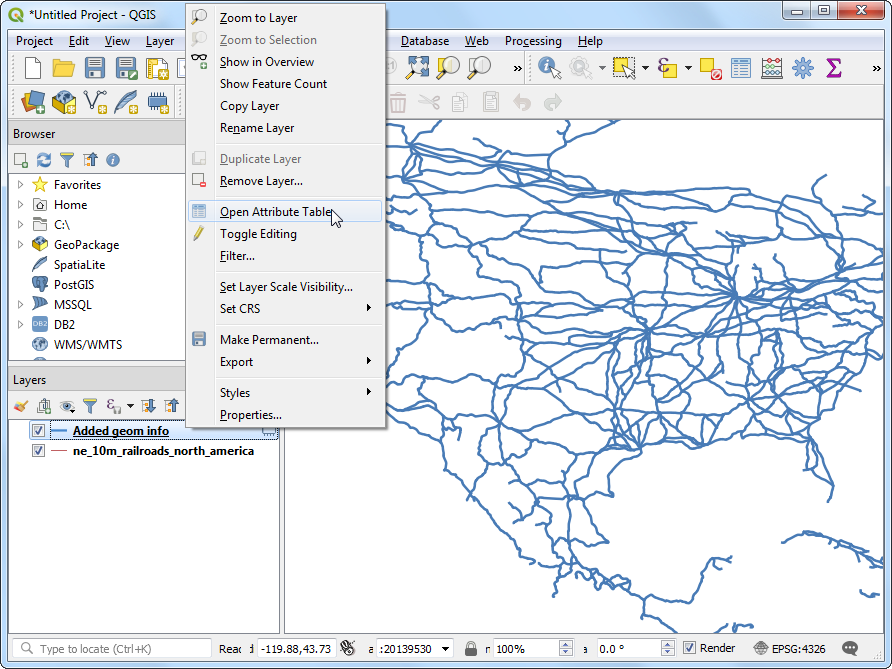
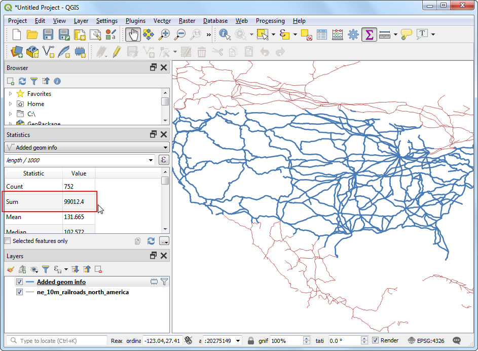

Ujaval Gandhi
Ujaval GandhiLengten van lijnen en statistieken berekenen (QGIS3)¶
QGIS heeft ingebouwde functies om verschillende eigenschappen te berekenen, gebaseerd op de geometrie van het object - zoals lengte, gebied, omtrek etc. Deze handleiding zal weergeven hoe Attributen voor geometrie toevoegen gebruikt kan worden om een kolom toe te voegen met een waarde die de lengte van elk object vertegenwoordigt.
Overzicht van de taak¶
Gegeven een polyline-laag van spoorwegen in Noord Amerika zullen we proberen de totale lengte te bepalen van spoorwegen in de Verenigde Staten.
Andere vaardigheden die u zult leren¶
Uitdrukkingen gebruiken om objecten te selecteren.
Het paneel Statistieken gebruiken om statistieken op kolommen te berekenen en weer te geven.
De gegevens ophalen¶
Natural Earth heeft een gegevensset voor spoorwegen in het publieke domein.
Download het North America supplement zip-bestand vanaf het portaal.
Voor het gemak kunt u direct een kopie van de gegevensset downloaden vanaf de link hieronder:
ne_10m_railroads_north_america..zip
Gegevensbron [NATURALEARTH]
Procedure¶
Zoek in de QGIS Browser naar het bestand
ne_10m_railroads_north_america.zipen vergroot het. Sleep het bestandne_10m_railroads_north_america.shpnaar het kaartvenster.

U zult een nieuwe laag
ne_10m_railroads_north_americazien geladen in het paneel Lagen. U zult zien dat de laag lijnen heeft die de spoorwegen voor geheel Noord-Amerika weergeven. Laten we nu de lengte van elk object lijn eens berekenen. Ga naar .

Zoek en lokaliseer het algoritme . Dubbelklik erop om het te openen.

Selecteer, in het dialoogvenster Attributen voor geometrie toevoegen,
ne_10m_railroads_north_americaals de Invoerlaag. Het Coördinaten ReferentieSysteem (CRS) voor de invoerlaag is EPSG:4326 WGS84. Dit is een Geografisch CRS met Latitude en Longitude als coördinaten, WGS84 als ellipsoïde en graden als eenheden. Omdat latitude en longitude geen standaard lengte hebben, kunt u geen afstanden of gebieden nauwkeurig meten met behulp van planaire functies voor geometrie Gelukkig verschaft QGIS een betere manier om afstanden te berekenen met ellipsoïdische geometrie, wat de meest nauwkeurige methode is voor lagen die grote gebieden overspannen zoals dit SelecteerEllipsoïdischals de optie voor Bereken met. Klik op Uitvoeren. Klik op Sluiten als het proces is voltooid.

Notitie
Als uw invoerlaag in een Geprojecteerd CRS staat, zou u de optie Laag-CRS kunnen kiezen voor het berekenen. Lokale of regionale geprojecteerde coördinatensystemen zijn ontworpen om de vervormingen voor hun regio te minimaliseren, en zijn dus nauwkeuriger voor zulke berekeningen. Ellipsoïdisch heeft de voorkeur voor lagen in een Geografisch CRS (d.i. Lat/Lon). De standaard eenheid voor het berekenen van ellipsoïde lengtes is meters en kan worden gewijzigd door te gaan naar .
U zult een nieuwe laag
Geom-info toegevoegdzien geladen in het paneel Lagen. Dit is een kopie van de invoerlaag met een nieuw toegevoegde kolom voor de afstand. Klik met rechts op de laagGeom-info toegevoegden selecteer Attributentabel openen.

Notitie
Het gereedschap Attributen voor geometrie toevoegen voegt verschillende soorten attributen toe, afhankelijk van het feit of de invoerlaag een punten-, lijnen- of polygonenlaag is. Bekijk de documentatie van QGIS voor meer details.
In de Attributentabel zult u een nieuwe kolom zien, genaamd length. Deze bevat de lengte van elk object lijn in meters. Merk ook het attribuut sov_a3 op dat de landcode voor elk object bevat. Sluit het venster Attributentabel.

Nu we de totale lengte van individuele lijnsegmenten van de spoorwegen hebben kunnen we ze bij elkaar optellen om de totale lengte van de spoorwegen te krijgen. Maar, zoals de opdracht van het probleem al vermeldde, moeten we de totale lengte van de spoorwegen in de Verenigde Staten hebben, we moeten dus alleen segmenten gebruiken die binnen de Verenigde Staten liggen. We kunnen de landcode in de kolom sov_a3 gebruiken om de laag te filteren. Klik met rechts op de laag
Geom-info toegevoegden selecteer Filteren.

Voer, in het dialoogvenster Querybouwer, de volgende expressie in en klik op OK.
"sov_a3" = 'USA'
U zult een pictogram Filter zien verschijnen naast de laag
Geom-info toegevoegdin het paneel Lagen, dat aangeeft dat op de laag een filter is toegepast. U kunt ook visueel bevestigen dat de laag nu lijnsegmenten bevat, alleen voor de Verenigde Staten. Nu zijn we klaar om de som te berekenen. Klik op de knop Statistisch overzicht weergeven op de werkbalk Attributen.

Een nieuw paneel Statisteken zal openen. Selecteer de laag
Geom-info toegevoegden de kolomlength.

U zult verschillende statistieken zien weergegeven in het paneel. De eenheid van de statistieken is hetzelfde als de eenheden van de kolom
length- meters. Laten we de berekening wijzigen door in plaats daarvan kilometers te gebruiken. Klik op het pictogram Expressie naast het keuzemenu voor de velden in het paneel Statistieken.

Voer de volgende expressie in in het dialoogvenster Expressie die de lengte naar kilometers converteert.
length / 1000
De waarde Som die wordt weergegeven is de totale lengte van spoorwegen in de Verenigde Staten.

If you want to give feedback or share your experience with this tutorial, please comment below. (requires GitHub account)